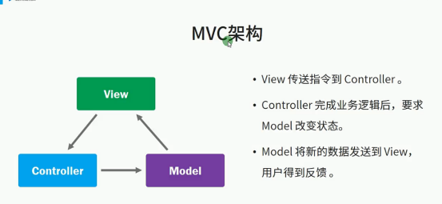
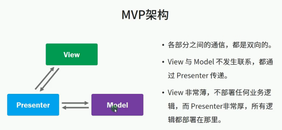
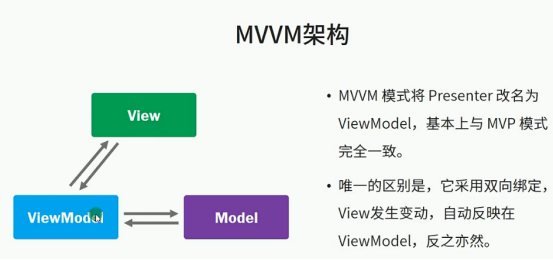
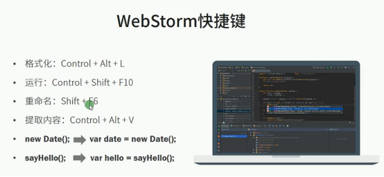
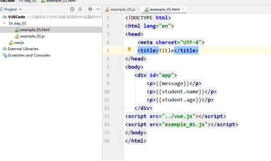
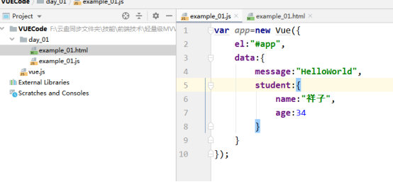
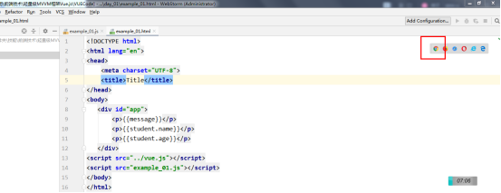
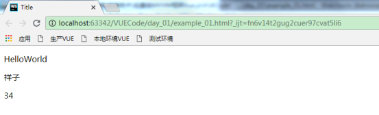

最近一段时间，Web前端领域出现了很多MVVM框架技术，如AngularJS、React，VUE.js等等。
Vue.js借鉴了AngularJS的设计理念，也吸取了React和AngularJS的教训，VUE被设计成一种轻量级的MVVM框架，文档清晰，容易学习，深受前端开发人员的喜爱。
Vue通过一个尽量简单的API来提供反应式的数据绑定和可组合、复用的视图组件，它不是一个大而全的框架。
Vue是一个MVVM框架的实现，他只提供了框架，更多的功能你可以结合其他的前端技术来实现，比如在VUE里面，你想去对DOM进行复杂操作，可以将Jquery引入进来，Jquery对DOM的操作是最灵活最强大的。
为什么写前端需要用框架呢？
复杂的软件必须有清晰合理的架构，否则无法开发和维护。MVC、MVP和MVVM，三者的目的都是关注分离，使得UI更容易变换、更容易进行单元测试。

MVC为什么要衍化成MVP框架呢？
这是因为MVC的缺点在于整个都是闭环的，每一个层面都要相互牵扯，功能多样性，违背了单一职责。

MVVM框架是将Presenter功能丰富了下，实现了主动监控数据变化。

下载地址
https://unpkg.com/vue/dist/vue.js
WebStorm




点击浏览器查看
